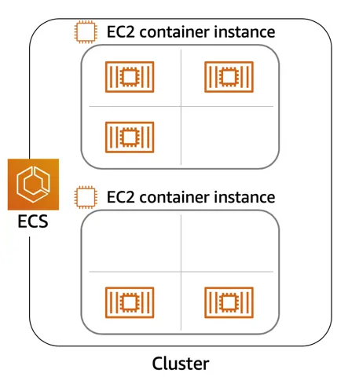

flowchart TD EC2((EC2 Family)) E1(Gen Purpose) E2(Compute Optimized) E3(Storage Optimized) E4(Memory/RAM Optimized) E5(Accelerated Computing) U1[Web Servers] U2[ML/DL in High power CPU] U3[MongoDB/NoSQL DBs] U4[Capable of processing<br>large workloads<br>in memory] U5[Workloads<br>needing GPUs] EC2 --> E1 EC2 --> E2 EC2 --> E3 EC2 --> E4 EC2 --> E5 E1 --> U1 E2 --> U2 E3 --> U3 E4 --> U4 E5 --> U5
03. Compute
👈 Back to: 📝 Blog | 💼 LinkedIn | ✍️ Medium
3.1 Introduction to Compute Options in AWS
Understanding Servers
- A server processes requests from clients and returns responses.
- Servers provide CPU, memory, and networking for applications.
- Most applications serve HTTP/API requests (web servers like IIS, Apache, Nginx).
- In AWS, you choose a compute service to run these servers.
Choose the Right Compute Option
AWS compute falls into three categories:
- Virtual Machines
- Containers
- Serverless
Virtual Machines (VMs)
- Closest to traditional servers
- Full OS control
- Run on a hypervisor
Amazon EC2
- AWS VM service
- AWS manages hardware + hypervisor
- You manage OS and applications
Hypervisor
- Enables multiple OSs on one physical machine
- Provides isolation, scalability, and flexibility
3.2 Amazon Elastic Compute Cloud (EC2)
- EC2 provides resizable virtual servers called instances
- Instances are created via Console, CLI, SDK, or automation
- You define:
- Hardware (CPU, memory, storage, networking)
- OS, security, networking, access
Amazon Machine Image (AMI)
- Template used to launch EC2 instances
- Contains:
- OS
- Architecture
- Storage mappings
- Optional software

AMI vs EC2
- AMI = template / recipe
- EC2 instance = running server / instantiation of the recipe
- Equivalent to Class vs Object
AMI Reuse
- Create once, launch many identical instances
- Avoids manual reconfiguration and errors

Where Can You Find AMIs?
- AWS Quick Start AMIs
- AWS Marketplace
- My AMIs
- Community AMIs
- EC2 Image Builder
3.3 Types of EC2 Instances
3.3 Container Services on AWS
- Containers package code + dependencies
- Portable across environments (dev → prod → cloud)
- Solve “works on my machine” problems
Docker
- Most common container runtime
- Simplifies container build and execution

Containers vs VMs
- Containers share host OS → lightweight, fast startup
- VMs include full OS → heavier, more isolation
Orchestrate Containers
At scale, you need orchestration to handle:
- Placement
- Failures
- Scaling
- Monitoring
AWS orchestration services:
- Amazon ECS
- Amazon EKS
Amazon Elastic Container Service (ECS)
- AWS‑native container orchestration
- Runs containers on EC2 or AWS Fargate

ECS Agent
- Installed on EC2 instances
- EC2 + agent = container instance

Task Definition
- JSON blueprint describing containers and resources
{
"family": "webserver",
"containerDefinitions": [
{
"name": "web",
"image": "nginx",
"memory": "100",
"cpu": "99"
}
],
"requiresCompatibilities": ["FARGATE"],
"networkMode": "awsvpc",
"memory": "512",
"cpu": "256"
}ECS Summary
- AWS‑native orchestration
- No Kubernetes
- Containers = tasks
- Can run on EC2 or Fargate
Amazon Elastic Kubernetes Service (EKS)
- Managed Kubernetes on AWS
- AWS manages control plane
- EC2 instances = worker nodes
- Containers run inside pods
ECS vs EKS Terminology
| ECS | EKS |
|---|---|
EC2 Instances where containers are run EC2 Container Instances |
EC2 Instances where containers run Worker Nodes |
A task refers to a set of one or more containers that are scheduled together |
A pod - the smallest deployable unit and equivalent of task in ECS - consists of one or more containers that share resources |
Summary: In ECS, the EC2 instances where containers run are called container instances because they have the ECS agent installed to manage tasks |
Summary: In EKS (Kubernetes), the EC2 instances are called worker nodes, and they are part of the broader Kubernetes cluster. Kubernetes distributes containers (in the form of pods) to these nodes. |

| ECS | EKS |
|---|---|
| Container Instance | Worker Node |
| Task | Pod |
| AWS-native | Kubernetes |
3.4 Serverless and AWS Lambda
Remove Undifferentiated Heavy Lifting
- EC2 → you manage OS, patching, scaling
- Containers → AWS helps, but EC2 still exists
- Serverless → no servers to manage
Serverless Characteristics
- No infrastructure management
- Auto scaling
- Pay per use
- Built‑in availability
AWS Fargate
- Serverless compute for containers
- Works with ECS and EKS
- No EC2 management
- Native IAM and VPC integration
AWS Lambda
- Run code without servers or containers
- Event‑driven execution
- Automatic scaling
- Millisecond‑level billing
Lambda Function Structure
def handler_name(event, context):
...
return some_value- Handler = entry point
- Trigger = when it runs
- Configuration = memory, timeout, IAM, networking
Billing
- Charged per request
- Charged per execution time (ms)
- No cost when idle
3.5 Notes from Computing Quiz
EC2 = Virtual Machines
Multiple containers can run on one EC2
Instance type = family + generation + size
- EC2 Instance type indicate the following:
instance familyandinstance size. E.g.:c5.large–> c - compute optimized, c5 - 5th generation, large - indicates instance size > AMI = template for EC2
- EC2 Instance type indicate the following:
AWS Fargate vs AWS EC2 in ECS: For Fargate, AWS manages the provision, configuration and scale of the clusters. For
EC2 in ECS, user manages the provisioning, configuration and scale of EC2 instance clusterServerless services do not require VPC. But can be included in a VPC of your own account.
ECS + EC2 → user manages instances
ECS + Fargate → AWS manages infrastructure
Serverless does not require VPC but can run inside one